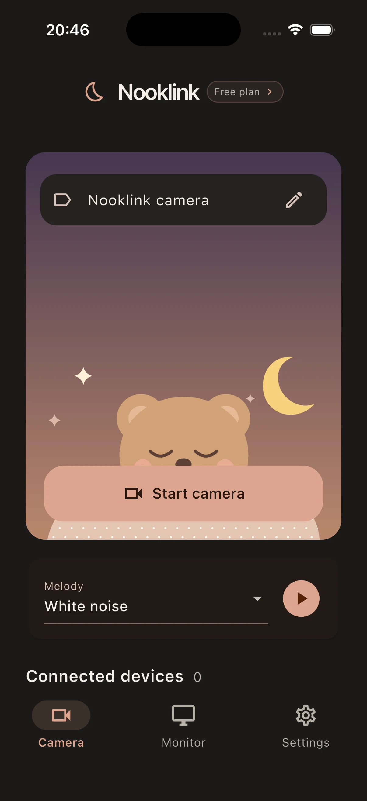
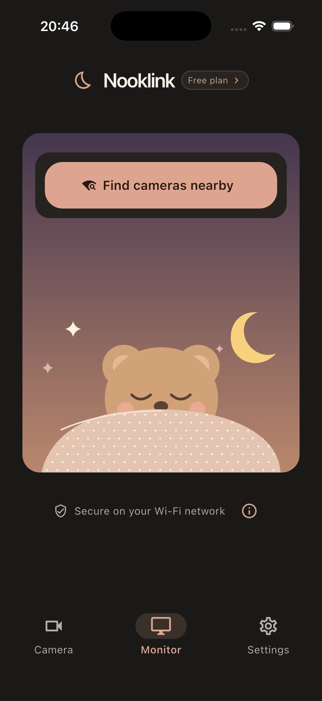

Camera→Company servers→Your phone
Video makes a round trip outside your home before it reaches you.
Local-only · No data leaves your network
Nooklink streams from the camera phone straight to your monitor over your home Wi‑Fi. No account in the middle, no servers, no uploads.


Data flow
Video makes a round trip outside your home before it reaches you.
Video and sound stay inside your home network from start to finish.
Setup
On the nursery phone, open Camera and tap Start camera. Give it a name you'll recognize.
▣ Start cameraOn your phone or computer, open Monitor and tap Find cameras nearby.
⌕ Find cameras nearbyKeep an eye on the room, and play white noise or another melody on the camera if it helps.
MelodyDetails
Free plan available.